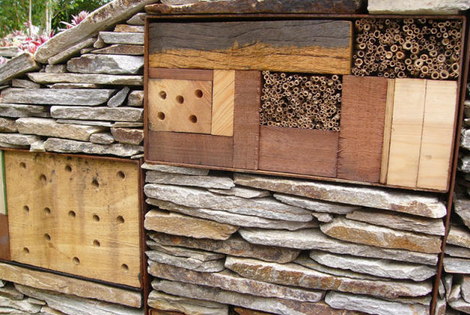

如此有艺术感的花园，醉了~~~~~
集装箱花园位于英国伦敦的切尔西展览，由William Robinsons负责设计建造，并曾在花园展览上获得金奖。
William Robinsons建造这间花园的目的在于把花园的设计透过艺术和塑料材料的运用得以展现，呼吁可持续发展。
屋顶的设计有利于蝙蝠以及鸟类的栖息。
屋子外的石墙都是由各种可回收的材料如木块，石头，老木桩等构成，石墙的设计有利于各种昆虫的栖息，甚至还可以拿来放旧书。

外墙面的圆形框架用于无脊椎动物的栖息。
屋子门前的两个圆形水池负责收集雨水，溢出的雨水能够进入到植物区，用以灌溉植物。
花园里种满了各色的植物，十分漂亮。
在展会上，花园的设计受到参观者的赞赏。
花园的总效果图